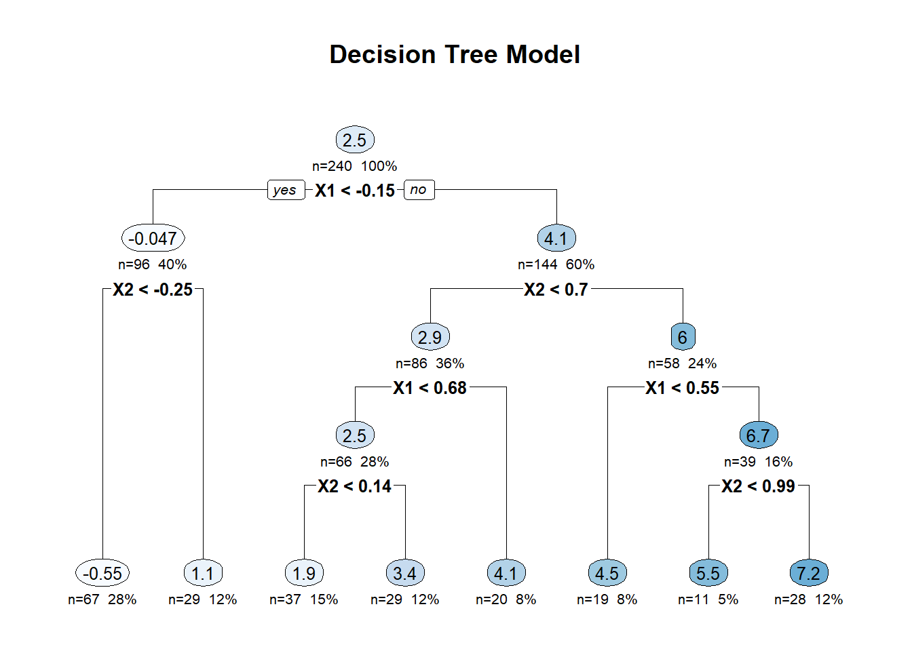
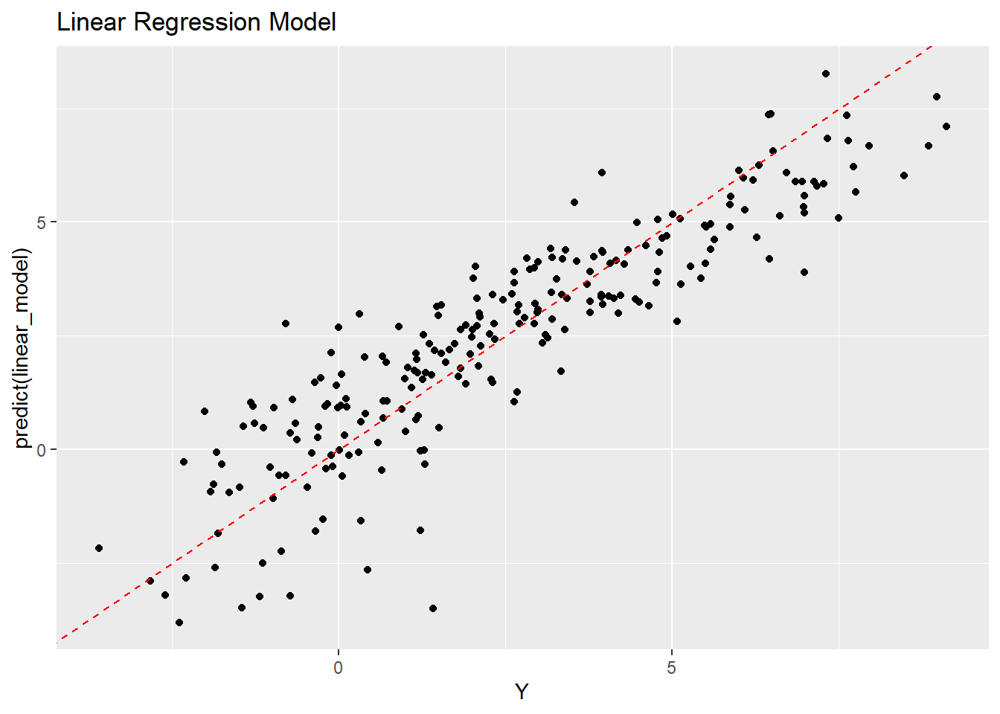
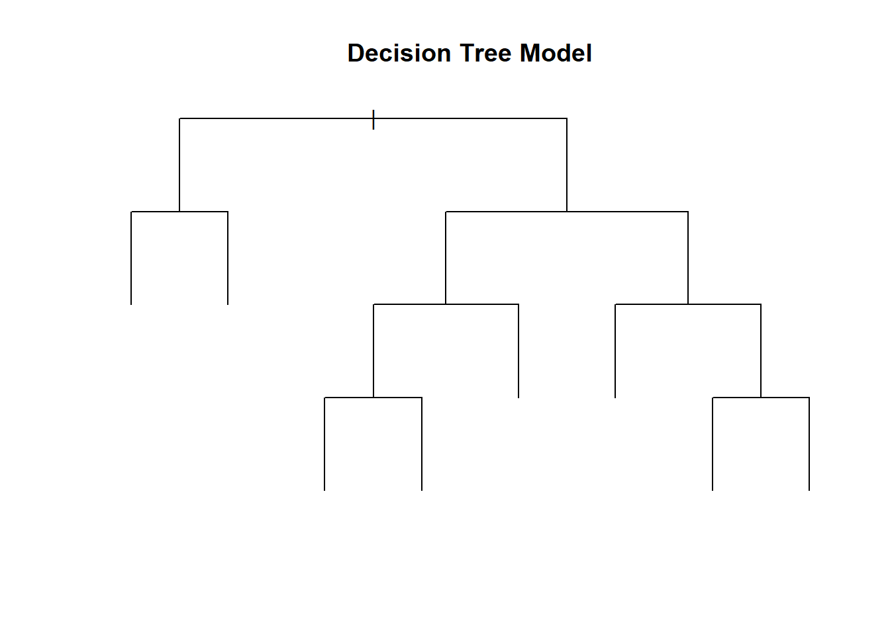
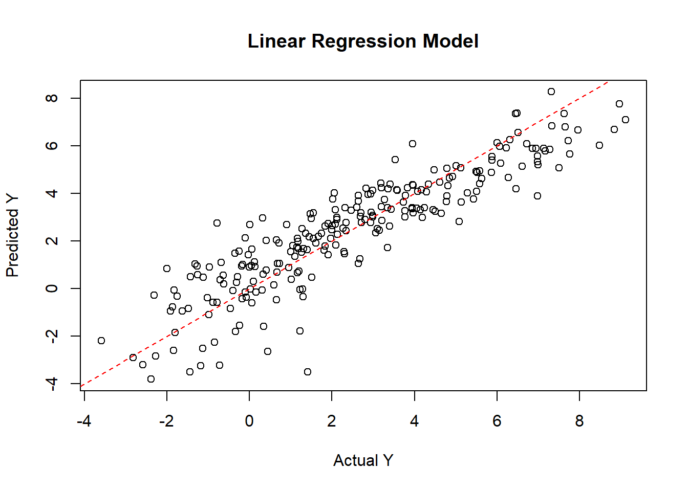

# Install and load necessary packages
if (!requireNamespace("MASS", quietly = TRUE)) {
install.packages("MASS")
}
if (!requireNamespace("rpart", quietly = TRUE)) {
install.packages("rpart")
}
if (!requireNamespace("rpart.plot", quietly = TRUE)) {
install.packages("rpart.plot")
}
if (!requireNamespace("ggplot2", quietly = TRUE)) {
install.packages("ggplot2")
}
if (!requireNamespace("kableExtra", quietly = TRUE)) {
install.packages("kableExtra")
}
if (!requireNamespace("caret", quietly = TRUE)) {
install.packages("caret")
}
library(MASS)
library(rpart)
library(rpart.plot)Warning: package 'rpart.plot' was built under R version 4.3.2library(ggplot2)
library(kableExtra)
library(caret)Loading required package: lattice# Set seed for reproducibility
set.seed(123)
# Function to generate complex data
generate_complex_data <- function(n) {
mu <- rep(0, 5)
Sigma <- matrix(0.7, nrow = 5, ncol = 5)
diag(Sigma) <- 1
data <- mvrnorm(n, mu, Sigma)
data <- as.data.frame(data)
names(data) <- c("X1", "X2", "X3", "X4", "Y")
data$Y <- 2*sin(data$X1) + 3*log(1 + exp(data$X2)) + rnorm(n)
return(data)
}
# Generate complex data
data <- generate_complex_data(300)
# Split the dataset into training and testing sets
train_index <- createDataPartition(data$Y, p = 0.8, list = FALSE)
train_data <- data[train_index, ]
test_data <- data[-train_index, ]
# Decision tree model
tree_model <- rpart(Y ~ ., data = train_data, method = "anova")
# Linear regression model
linear_model <- lm(Y ~ ., data = train_data)
# Visualize decision tree
rpart.plot(tree_model, main = "Decision Tree Model", extra = 101, under = TRUE, compress = TRUE)
# Visualize linear regression
ggplot(train_data, aes(x = Y, y = predict(linear_model))) +
geom_point() +
geom_abline(intercept = 0, slope = 1, linetype = "dashed", color = "red") +
ggtitle("Linear Regression Model")
# Display decision tree model summary using kableExtra
tree_summary <- summary(tree_model)Call:
rpart(formula = Y ~ ., data = train_data, method = "anova")
n= 240
CP nsplit rel error xerror xstd
1 0.54997276 0 1.0000000 1.0057093 0.07513055
2 0.17981516 1 0.4500272 0.5183794 0.04043374
3 0.03312631 2 0.2702121 0.3261017 0.02839097
4 0.03075679 3 0.2370858 0.3057193 0.02639404
5 0.02067114 4 0.2063290 0.2473445 0.02244488
6 0.01987992 5 0.1856578 0.2499782 0.02174300
7 0.01193845 6 0.1657779 0.2357704 0.02084311
8 0.01000000 7 0.1538395 0.2310490 0.02059688
Variable importance
X1 X2 X3 X4
39 28 17 16
Node number 1: 240 observations, complexity param=0.5499728
mean=2.460614, MSE=7.621179
left son=2 (96 obs) right son=3 (144 obs)
Primary splits:
X1 < -0.1520619 to the left, improve=0.5499728, (0 missing)
X2 < 0.5711715 to the left, improve=0.5159892, (0 missing)
X3 < 0.1208541 to the left, improve=0.2968321, (0 missing)
X4 < -0.07148916 to the left, improve=0.2886611, (0 missing)
Surrogate splits:
X2 < -0.3762551 to the left, agree=0.779, adj=0.448, (0 split)
X3 < -0.2387109 to the left, agree=0.758, adj=0.396, (0 split)
X4 < -0.3551359 to the left, agree=0.754, adj=0.385, (0 split)
Node number 2: 96 observations, complexity param=0.03075679
mean=-0.04680701, MSE=1.833011
left son=4 (67 obs) right son=5 (29 obs)
Primary splits:
X2 < -0.2476466 to the left, improve=0.3196967, (0 missing)
X1 < -0.8322406 to the left, improve=0.2236104, (0 missing)
X4 < -0.4008152 to the left, improve=0.1813125, (0 missing)
X3 < -0.904785 to the left, improve=0.1080443, (0 missing)
Surrogate splits:
X3 < 0.2833611 to the left, agree=0.781, adj=0.276, (0 split)
X1 < -0.3992759 to the left, agree=0.760, adj=0.207, (0 split)
X4 < -0.09476738 to the left, agree=0.750, adj=0.172, (0 split)
Node number 3: 144 observations, complexity param=0.1798152
mean=4.132228, MSE=4.494223
left son=6 (86 obs) right son=7 (58 obs)
Primary splits:
X2 < 0.7020045 to the left, improve=0.5082093, (0 missing)
X1 < 0.5961358 to the left, improve=0.4199056, (0 missing)
X3 < 1.187476 to the left, improve=0.2117912, (0 missing)
X4 < 0.7281971 to the left, improve=0.1454059, (0 missing)
Surrogate splits:
X1 < 0.5961358 to the left, agree=0.722, adj=0.310, (0 split)
X3 < 1.00385 to the left, agree=0.722, adj=0.310, (0 split)
X4 < 0.7281971 to the left, agree=0.708, adj=0.276, (0 split)
Node number 4: 67 observations
mean=-0.5504389, MSE=1.339999
Node number 5: 29 observations
mean=1.116756, MSE=1.032152
Node number 6: 86 observations, complexity param=0.02067114
mean=2.89111, MSE=1.984277
left son=12 (66 obs) right son=13 (20 obs)
Primary splits:
X1 < 0.6788651 to the left, improve=0.22156300, (0 missing)
X2 < -0.6461858 to the left, improve=0.18349230, (0 missing)
X3 < 0.3337678 to the left, improve=0.07177039, (0 missing)
X4 < -0.6901304 to the left, improve=0.07147937, (0 missing)
Surrogate splits:
X3 < 1.306227 to the left, agree=0.791, adj=0.1, (0 split)
Node number 7: 58 observations, complexity param=0.03312631
mean=5.972508, MSE=2.545232
left son=14 (19 obs) right son=15 (39 obs)
Primary splits:
X1 < 0.5487777 to the left, improve=0.4104414, (0 missing)
X2 < 1.284502 to the left, improve=0.3764514, (0 missing)
X3 < 0.64023 to the left, improve=0.1446203, (0 missing)
X4 < 0.5195383 to the left, improve=0.1065470, (0 missing)
Surrogate splits:
X4 < 0.1602244 to the left, agree=0.759, adj=0.263, (0 split)
X3 < -0.4101765 to the left, agree=0.707, adj=0.105, (0 split)
Node number 12: 66 observations, complexity param=0.01987992
mean=2.52611, MSE=1.634518
left son=24 (37 obs) right son=25 (29 obs)
Primary splits:
X2 < 0.1420471 to the left, improve=0.33706550, (0 missing)
X3 < 0.7950633 to the left, improve=0.07418237, (0 missing)
X4 < -0.7620964 to the left, improve=0.07367549, (0 missing)
X1 < 0.202155 to the left, improve=0.06774626, (0 missing)
Surrogate splits:
X3 < -0.07669569 to the left, agree=0.652, adj=0.207, (0 split)
X1 < -0.03456467 to the right, agree=0.591, adj=0.069, (0 split)
X4 < 0.7481645 to the left, agree=0.576, adj=0.034, (0 split)
Node number 13: 20 observations
mean=4.095609, MSE=1.248018
Node number 14: 19 observations
mean=4.508159, MSE=1.691793
Node number 15: 39 observations, complexity param=0.01193845
mean=6.685909, MSE=1.4074
left son=30 (11 obs) right son=31 (28 obs)
Primary splits:
X2 < 0.9883665 to the left, improve=0.39783150, (0 missing)
X1 < 1.190038 to the left, improve=0.18917110, (0 missing)
X3 < 0.4410145 to the left, improve=0.14366120, (0 missing)
X4 < 0.7637458 to the right, improve=0.02763798, (0 missing)
Surrogate splits:
X3 < 0.1215273 to the left, agree=0.795, adj=0.273, (0 split)
X4 < 1.665356 to the right, agree=0.744, adj=0.091, (0 split)
Node number 24: 37 observations
mean=1.868981, MSE=1.091084
Node number 25: 29 observations
mean=3.364515, MSE=1.074002
Node number 30: 11 observations
mean=5.492083, MSE=0.8445061
Node number 31: 28 observations
mean=7.154912, MSE=0.8486653 # Display linear regression model summary using kableExtra
linear_summary <- summary(linear_model)
# Display decision tree model summary
tree_summary <- summary(tree_model)Call:
rpart(formula = Y ~ ., data = train_data, method = "anova")
n= 240
CP nsplit rel error xerror xstd
1 0.54997276 0 1.0000000 1.0057093 0.07513055
2 0.17981516 1 0.4500272 0.5183794 0.04043374
3 0.03312631 2 0.2702121 0.3261017 0.02839097
4 0.03075679 3 0.2370858 0.3057193 0.02639404
5 0.02067114 4 0.2063290 0.2473445 0.02244488
6 0.01987992 5 0.1856578 0.2499782 0.02174300
7 0.01193845 6 0.1657779 0.2357704 0.02084311
8 0.01000000 7 0.1538395 0.2310490 0.02059688
Variable importance
X1 X2 X3 X4
39 28 17 16
Node number 1: 240 observations, complexity param=0.5499728
mean=2.460614, MSE=7.621179
left son=2 (96 obs) right son=3 (144 obs)
Primary splits:
X1 < -0.1520619 to the left, improve=0.5499728, (0 missing)
X2 < 0.5711715 to the left, improve=0.5159892, (0 missing)
X3 < 0.1208541 to the left, improve=0.2968321, (0 missing)
X4 < -0.07148916 to the left, improve=0.2886611, (0 missing)
Surrogate splits:
X2 < -0.3762551 to the left, agree=0.779, adj=0.448, (0 split)
X3 < -0.2387109 to the left, agree=0.758, adj=0.396, (0 split)
X4 < -0.3551359 to the left, agree=0.754, adj=0.385, (0 split)
Node number 2: 96 observations, complexity param=0.03075679
mean=-0.04680701, MSE=1.833011
left son=4 (67 obs) right son=5 (29 obs)
Primary splits:
X2 < -0.2476466 to the left, improve=0.3196967, (0 missing)
X1 < -0.8322406 to the left, improve=0.2236104, (0 missing)
X4 < -0.4008152 to the left, improve=0.1813125, (0 missing)
X3 < -0.904785 to the left, improve=0.1080443, (0 missing)
Surrogate splits:
X3 < 0.2833611 to the left, agree=0.781, adj=0.276, (0 split)
X1 < -0.3992759 to the left, agree=0.760, adj=0.207, (0 split)
X4 < -0.09476738 to the left, agree=0.750, adj=0.172, (0 split)
Node number 3: 144 observations, complexity param=0.1798152
mean=4.132228, MSE=4.494223
left son=6 (86 obs) right son=7 (58 obs)
Primary splits:
X2 < 0.7020045 to the left, improve=0.5082093, (0 missing)
X1 < 0.5961358 to the left, improve=0.4199056, (0 missing)
X3 < 1.187476 to the left, improve=0.2117912, (0 missing)
X4 < 0.7281971 to the left, improve=0.1454059, (0 missing)
Surrogate splits:
X1 < 0.5961358 to the left, agree=0.722, adj=0.310, (0 split)
X3 < 1.00385 to the left, agree=0.722, adj=0.310, (0 split)
X4 < 0.7281971 to the left, agree=0.708, adj=0.276, (0 split)
Node number 4: 67 observations
mean=-0.5504389, MSE=1.339999
Node number 5: 29 observations
mean=1.116756, MSE=1.032152
Node number 6: 86 observations, complexity param=0.02067114
mean=2.89111, MSE=1.984277
left son=12 (66 obs) right son=13 (20 obs)
Primary splits:
X1 < 0.6788651 to the left, improve=0.22156300, (0 missing)
X2 < -0.6461858 to the left, improve=0.18349230, (0 missing)
X3 < 0.3337678 to the left, improve=0.07177039, (0 missing)
X4 < -0.6901304 to the left, improve=0.07147937, (0 missing)
Surrogate splits:
X3 < 1.306227 to the left, agree=0.791, adj=0.1, (0 split)
Node number 7: 58 observations, complexity param=0.03312631
mean=5.972508, MSE=2.545232
left son=14 (19 obs) right son=15 (39 obs)
Primary splits:
X1 < 0.5487777 to the left, improve=0.4104414, (0 missing)
X2 < 1.284502 to the left, improve=0.3764514, (0 missing)
X3 < 0.64023 to the left, improve=0.1446203, (0 missing)
X4 < 0.5195383 to the left, improve=0.1065470, (0 missing)
Surrogate splits:
X4 < 0.1602244 to the left, agree=0.759, adj=0.263, (0 split)
X3 < -0.4101765 to the left, agree=0.707, adj=0.105, (0 split)
Node number 12: 66 observations, complexity param=0.01987992
mean=2.52611, MSE=1.634518
left son=24 (37 obs) right son=25 (29 obs)
Primary splits:
X2 < 0.1420471 to the left, improve=0.33706550, (0 missing)
X3 < 0.7950633 to the left, improve=0.07418237, (0 missing)
X4 < -0.7620964 to the left, improve=0.07367549, (0 missing)
X1 < 0.202155 to the left, improve=0.06774626, (0 missing)
Surrogate splits:
X3 < -0.07669569 to the left, agree=0.652, adj=0.207, (0 split)
X1 < -0.03456467 to the right, agree=0.591, adj=0.069, (0 split)
X4 < 0.7481645 to the left, agree=0.576, adj=0.034, (0 split)
Node number 13: 20 observations
mean=4.095609, MSE=1.248018
Node number 14: 19 observations
mean=4.508159, MSE=1.691793
Node number 15: 39 observations, complexity param=0.01193845
mean=6.685909, MSE=1.4074
left son=30 (11 obs) right son=31 (28 obs)
Primary splits:
X2 < 0.9883665 to the left, improve=0.39783150, (0 missing)
X1 < 1.190038 to the left, improve=0.18917110, (0 missing)
X3 < 0.4410145 to the left, improve=0.14366120, (0 missing)
X4 < 0.7637458 to the right, improve=0.02763798, (0 missing)
Surrogate splits:
X3 < 0.1215273 to the left, agree=0.795, adj=0.273, (0 split)
X4 < 1.665356 to the right, agree=0.744, adj=0.091, (0 split)
Node number 24: 37 observations
mean=1.868981, MSE=1.091084
Node number 25: 29 observations
mean=3.364515, MSE=1.074002
Node number 30: 11 observations
mean=5.492083, MSE=0.8445061
Node number 31: 28 observations
mean=7.154912, MSE=0.8486653 print("Decision Tree Model Summary:")[1] "Decision Tree Model Summary:"print(tree_summary$splits) count ncat improve index adj
X1 240 -1 0.54997276 -0.15206190 0.00000000
X2 240 -1 0.51598924 0.57117154 0.00000000
X3 240 -1 0.29683212 0.12085413 0.00000000
X4 240 -1 0.28866113 -0.07148916 0.00000000
X2 0 -1 0.77916667 -0.37625507 0.44791667
X3 0 -1 0.75833333 -0.23871092 0.39583333
X4 0 -1 0.75416667 -0.35513593 0.38541667
X2 96 -1 0.31969666 -0.24764657 0.00000000
X1 96 -1 0.22361036 -0.83224062 0.00000000
X4 96 -1 0.18131247 -0.40081515 0.00000000
X3 96 -1 0.10804433 -0.90478499 0.00000000
X3 0 -1 0.78125000 0.28336110 0.27586207
X1 0 -1 0.76041667 -0.39927594 0.20689655
X4 0 -1 0.75000000 -0.09476738 0.17241379
X2 144 -1 0.50820930 0.70200451 0.00000000
X1 144 -1 0.41990565 0.59613581 0.00000000
X3 144 -1 0.21179123 1.18747565 0.00000000
X4 144 -1 0.14540589 0.72819711 0.00000000
X1 0 -1 0.72222222 0.59613581 0.31034483
X3 0 -1 0.72222222 1.00385016 0.31034483
X4 0 -1 0.70833333 0.72819711 0.27586207
X1 86 -1 0.22156296 0.67886512 0.00000000
X2 86 -1 0.18349234 -0.64618584 0.00000000
X3 86 -1 0.07177039 0.33376782 0.00000000
X4 86 -1 0.07147937 -0.69013038 0.00000000
X3 0 -1 0.79069767 1.30622740 0.10000000
X2 66 -1 0.33706547 0.14204707 0.00000000
X3 66 -1 0.07418237 0.79506334 0.00000000
X4 66 -1 0.07367549 -0.76209643 0.00000000
X1 66 -1 0.06774626 0.20215498 0.00000000
X3 0 -1 0.65151515 -0.07669569 0.20689655
X1 0 1 0.59090909 -0.03456467 0.06896552
X4 0 -1 0.57575758 0.74816451 0.03448276
X1 58 -1 0.41044136 0.54877770 0.00000000
X2 58 -1 0.37645141 1.28450238 0.00000000
X3 58 -1 0.14462033 0.64023004 0.00000000
X4 58 -1 0.10654699 0.51953834 0.00000000
X4 0 -1 0.75862069 0.16022443 0.26315789
X3 0 -1 0.70689655 -0.41017654 0.10526316
X2 39 -1 0.39783153 0.98836651 0.00000000
X1 39 -1 0.18917108 1.19003822 0.00000000
X3 39 -1 0.14366117 0.44101446 0.00000000
X4 39 1 0.02763798 0.76374584 0.00000000
X3 0 -1 0.79487179 0.12152733 0.27272727
X4 0 1 0.74358974 1.66535587 0.09090909# Display linear regression model summary
linear_summary <- summary(linear_model)
print("\nLinear Regression Model Summary:")[1] "\nLinear Regression Model Summary:"print(linear_summary)
Call:
lm(formula = Y ~ ., data = train_data)
Residuals:
Min 1Q Median 3Q Max
-3.5444 -0.8216 -0.0462 0.7647 4.9136
Coefficients:
Estimate Std. Error t value Pr(>|t|)
(Intercept) 2.51934 0.08004 31.476 <2e-16 ***
X1 1.46213 0.13025 11.225 <2e-16 ***
X2 1.40304 0.12716 11.034 <2e-16 ***
X3 0.04054 0.12353 0.328 0.743
X4 -0.07251 0.12161 -0.596 0.552
---
Signif. codes: 0 '***' 0.001 '**' 0.01 '*' 0.05 '.' 0.1 ' ' 1
Residual standard error: 1.239 on 235 degrees of freedom
Multiple R-squared: 0.8028, Adjusted R-squared: 0.7995
F-statistic: 239.2 on 4 and 235 DF, p-value: < 2.2e-16# Visualization of decision tree
plot(tree_model, uniform = TRUE, main = "Decision Tree Model")
# Visualization of linear regression
par(mfrow = c(1, 1)) # Reset the plotting layout
plot(train_data$Y, predict(linear_model), main = "Linear Regression Model",
xlab = "Actual Y", ylab = "Predicted Y")
abline(a = 0, b = 1, col = "red", lty = 2)